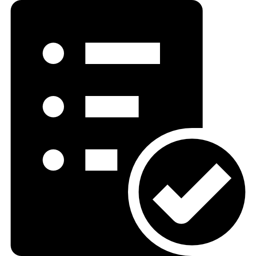

學習
技術面
Django
Vue
前後端分離
資料庫
Git
資料傳輸
數據呈現
CMD指令
RWD
SASS
非技術面
專案開發經驗
撰寫文件
跨專業交流
時間管理
寫「好」的程式
簡報製作、報告能力
善用工具
換位思考
使用者體驗
工作紀錄
 Django
Django
Django是基於Python的網頁框架，為MTV架構， 我主要學習的是Model (模型，可以理解為資料表設定) 跟View (資料處理、運算) 的使用，Template (頁面呈現樣式) 則是以Vue取代。
在撈取資料時，為了避免受到SQL Injection攻擊，沒有直接使用SQL語法撈取資料， 而是使用Django的ORM (Object Relational Mapping) 技術， 將資料庫裡面的資料表 (Model) 以物件 (Object) 的型態召喚出來做使用。
 前後端分離
前後端分離
在學校有用ASP.NET嘗試寫過類似前後端分離的MVC架構，但前後端仍然是緊密相關的， 而前後端分離的前端與後端通常使用不一樣的框架，並且當前端呼叫API時，後端才會向資料庫撈資料、做運算，因此前後端完全可以獨立開發。
如果想做到真正的前後端分離，就要好好思考哪些事情要給前端做、哪些適合給後端做，才能擁有更好的效率， 例如在新增資料時，如果將資料傳給後端之前多做一步資料格式審核，就能減少回傳錯誤訊息、再傳送修改後的資料而浪費的資源。
Git
Git是一種分散式版本控制系統，使用Git不但幫我記錄了專案的執行進度與細節， 以便事後分析當初開發時大多是在哪一個部分卡最久， 有一個穩定版本的紀錄檔也減少了我試錯的成本， 而將檔案推至GitHub上讓我也能遠距開發專案。
數據呈現
在這次的實習中我也學到很多數據呈現的技巧，以及數據視覺化的重要性， 例如，在實作新人專案-Dashboard儀錶板時，主管就希望我將主頁設計成以圖表為主的頁面，利用圖形表達變化趨勢，使用表格時也要將重要的資訊標註出來， 很感謝主管給我很大的發揮空間，讓我有機會站在使用者的角度去思考各個圖形要如何應用。
RWD
RWD (Responsive Web Design) ，讓網站能夠根據不同設備和螢幕尺寸，變換對應的排版與動態效果，確保網站在各種設備上都能提供良好的用戶體驗。我在設計介面時，因為要呈現的內容很多，所以花了很多時間規劃頁面的排版，例如當螢幕尺寸小於768px時，讓並排顯示的元素改以一排顯示一個，或是設定各個範圍的螢幕尺寸對應的元素寬度。
Vue
Vue是一種輕量型的框架，特色是變數雙向綁定與元件化模組。
在使用Vue開發時我有利用Webpack很便利的Hot-loader功能，
在存檔時自動觸發Webpack重新打包，不用刷新頁面就能直接看到更改的效果，頁面原先如果有輸入資料也會保留下來，不用重新輸入，大大加速檢驗程式碼的效率。
 資料庫
資料庫
這次實習主要接觸到PostgreSQL， 常常為了檢查Django ORM撈出的資料是否正確， 直接到資料庫內使用SQL語法查詢資料來對比，剛好在學校學過SQL語法，在實作時也更加得心應手。
有一段時間手邊同時有兩個存放在不同版本伺服器上的資料庫，為了讓兩邊伺服器都能正常連線， 我學會了在本地增加多個資料庫版本，以及透過設定port號，分隔不同版本伺服器連線時用的本地資料庫版本，避免發生版本衝突。
資料傳輸
這次實作我練習了Django REST Framework預設的POST (查詢、新增) 、GET (查詢) 、PUT (更新) 、DELETE (刪除) 等等功能的操作， 分別對應到資料庫的CRUD操作，是個非常方便的功能。
為了因應有些資料表格式較複雜，例如有雙主鍵的資料表， 我也試著自定義幾個需要複雜運算的PUT、GET功能，讓我對資料傳輸有更多的了解。
傳送資料時，為了以安全的方式傳輸， 我開啟了Django提供的csrf_token驗證機制來預防CSRF攻擊 (跨站請求偽造) ； 而為了保證資料正確的傳輸，我使用了Django Serializer將資料轉成傳送時需要的JSON格式。
CMD指令
不管是查詢電腦設定、查詢版本、安裝模組、開啟伺服器等等，都會使用到CMD， 雖然操作CMD會比使用GUI (用圖形方式顯示與操作使用者介面) 更不直觀， 但習慣操作後，我發覺CMD能夠設定更多參數，操作失敗時顯示的錯誤訊息有時候會更清楚，也能靈活地調整錯誤的地方， 程式有錯誤時，不但會在CMD顯示錯誤訊息，在Debug時也能讓CMD輸出不同變數的值、狀態，以此來排除問題。
SASS
SASS是一種CSS預處理器，擁有嵌套結構、變數和模組化設計的功能，其中我最常使用到變數的功能定義顏色的RGB、透明度，以及定義RWD變換排版的尺寸為多少px，這樣的作法讓維護、修改更加方便，只需要修改變數的值，就能將此修改套用到所有使用到這個變數的地方。
專案開發經驗
在設計程式架構時，偶爾會發生學了很多技術，但不知道要在什麼情境下使用的狀況， 這時候我會向主管請教，因此學到很多開發技巧以及了解到可以從哪些方面去思考用戶需求。
 跨專業交流
跨專業交流
進入紫式實習，讓我接觸到很多不同領域的專業人士，像是數學系、物理系、工工系、工管系等等， 我認為與不同背景的人溝通在職場上會是很重要的能力，因此之後會多努力培養這種能力。
寫「好」的程式
在公司我學習到模組化的重要性，以及盡量以較簡潔的方法寫程式，例如減少多層迴圈、多層判斷式，統一縮排格式等等。
 善用工具
善用工具
實習這段期間學習到很多工具的使用，例如繪製UI介面可以使用Figma，擁有豐富的插件可以使用，也能透過動畫模式設定頁面滑動、切換效果； 測試API可以使用Postman，模擬GET、POST、DELETE等等請求，也能設定登入資訊與CSRF Token； 繪製ERD可以使用DrawDB，ERD畫好後還能轉為多種資料庫的資料表新增SQL語法。
 使用者體驗
使用者體驗
在設計界面時，假如有需要讓使用者點選、勾選後，才能針對選取的選項顯示對應的資料的功能，我在設計介面時會讓頁面一開始只顯示要勾選的選項，但這樣會顯得畫面太空，使用者也沒辦法直觀的接收到想要的資料，跟公司的前輩請教後才了解到，一開始載入頁面時，即使還沒有資料可以呈現，也要先將頁面架構渲染出來，或是先設定好預設呈現的資料，讓使用者一點進頁面就能在畫面上看到架構或是預設的資料，再自行切換想要的資料。像這些很細節的小設計，就能發揮大作用，提升使用者體驗，讓系統更加完整。
 撰寫文件
撰寫文件
除了介紹系統功能、流程圖、UI線稿之外，也增加了系統定位、開發動機等等描述， 需要看這份文件的對象是不僅只有開發者，也有客戶，也就是系統使用者，這次實作練習了因應不同對象，以不同面向來呈現系統。
 時間管理
時間管理
實習的這段時間我學習到開發流程應該盡可能越詳細越好， 假設有一個步驟是製作後端API，其實可以拆分成確認資料格式、撰寫資料運算程式碼、測試是否能傳輸等等小步驟， 甚至細分至規劃每一支API每一個小步驟要花多久時間，以此規劃出來的預估時程會更接近實際開發的時程。
簡報製作、報告能力
我在會議上學習到很多簡報呈現方式與判斷要加入哪些內容的技巧， 其中我收穫最大的是主管會提出數據該如何呈現、要用什麼指標會更好、怎麼呈現能讓客戶感受到我們的成果是能顯著達到期初承諾的效果。 主管也會針對該專案客戶方與我們對接的人的身分背景，建議同事日後將成果報告給客戶時，是否要先介紹前提知識， 例如先解釋衡量指標的計算方式與意義，或是盡量以客戶最關心的指標表達，例如將數值轉換成能減少多少成本、增加多少收入。
換位思考
在實習時，我感受到這是一項很重要的能力，不管是在開發專案、報告、討論上，換位思考都能幫助雙方達成共識，往更好的方向發展， 開發時要專注於客戶需要的功能，報告時根據聆聽者的角色改變簡報要呈現的內容， 交流時也要去思考，對方說這段話的目的是什麼，如果我沒辦法做到，我可以提供什麼方法同樣能達成對方的目的。
 工作紀錄
實際加入專案後，我才真實的感受到將所有工作細節記錄起來的重要性，我加入專案時設計的介面不是一次就規劃好的，而是隨著PM與客戶的反饋不斷修改，將過往資訊都記錄起來，讓我能清晰的瀏覽開發歷程，需要報告執行狀況時，能夠迅速的整理過去做過哪些改變，以及還有哪些部分未完成。